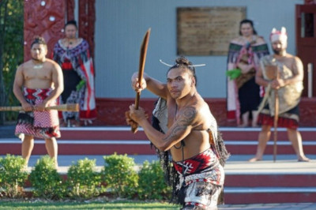

We are Aroha and Benny, two Kiwi entrepeneurs with a vision to share Maori culture and customs with the rest of the world...all while feeding them delicious traditional Maori food (kai).
Maori are the people of the land, or tengata whenua, who have lived in Aotearoa (New Zealand) for over 700 years.


If you'd like to know more about the Maori culture and history, you can visit the following resources: Maori culture and Maori history